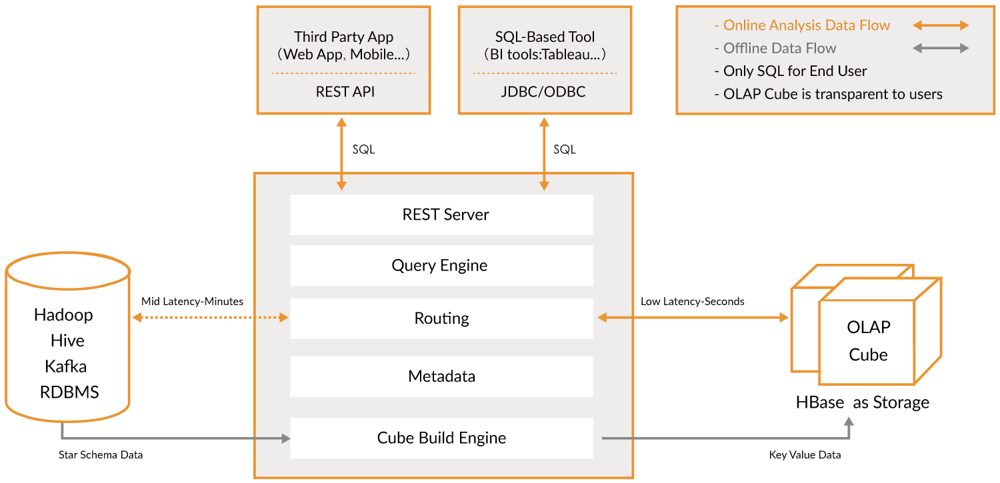

Introduction au Cloud Computing et au Big Data | Original, traduit par l'IA
Cette leçon couvre les sujets suivants :
- Spark
- Hadoop
- Kubernetes
- Docker
- Flink
- MongoDB
Lorsqu’on parle de cloud computing, il semble difficile de ne pas mentionner de nombreux outils tels que Hadoop, Hive, Hbase, ZooKeeper, Docker, Kubernetes, Spark, Kafka, MongoDB, Flink, Druid, Presto, Kylin, et Elastic Search. Les avez-vous tous entendus ? Certains de ces outils, je les ai découverts dans les descriptions de postes d’ingénieur en big data et d’ingénieur back-end distribué. Ce sont des postes bien rémunérés. Essayons de les installer tous et de les manipuler un peu.
Première exploration de Spark
Le site officiel indique que Spark est un moteur d’analyse pour le traitement de données à grande échelle. Spark est essentiellement une bibliothèque. Contrairement à Redis, il ne semble pas être divisé en un serveur et un client. Spark est uniquement utilisé côté client. J’ai téléchargé la dernière version depuis le site officiel, spark-3.1.1-bin-hadoop3.2.tar.
$ tree . -L 1
.
├── LICENSE
├── NOTICE
├── R
├── README.md
├── RELEASE
├── bin
├── conf
├── data
├── examples
├── jars
├── kubernetes
├── licenses
├── python
├── sbin
└── yarn
11 répertoires, 4 fichiers
Il semble qu'il s'agisse principalement de bibliothèques d'analyse écrites dans différents langages.
En même temps, le site officiel indique que vous pouvez installer directement les dépendances sur Python. `pip install pyspark`
```shell
$ pip install pyspark
Collecting pyspark
Téléchargement de pyspark-3.1.1.tar.gz (212,3 Mo)
|████████████████████████████████| 212,3 Mo 14 ko/s
Collecting py4j==0.10.9
Téléchargement de py4j-0.10.9-py2.py3-none-any.whl (198 ko)
|████████████████████████████████| 198 ko 145 ko/s
Construction des roues pour les paquets collectés : pyspark
Construction de la roue pour pyspark (setup.py) ... terminé
Roue créée pour pyspark : nom=pyspark-3.1.1-py2.py3-none-any.whl taille=212767604 sha256=0b8079e82f3a5bcadad99179902d8c8ff9f8eccad928a469c11b97abdc960b72
Stocké dans le répertoire : /Users/lzw/Library/Caches/pip/wheels/23/bf/e9/9f3500437422e2ab82246f25a51ee480a44d4efc6c27e50d33
pyspark construit avec succès
Installation des paquets collectés : py4j, pyspark
py4j-0.10.9 et pyspark-3.1.1 installés avec succès
Installé.
Je regarde le site officiel, il y a quelques exemples.
./bin/run-example SparkPi 10
Ah, donc on peut exécuter le programme contenu dans le package d’installation que l’on vient de télécharger. Mais il y a une erreur.
$ ./bin/run-example SparkPi 10
21/03/11 00:06:15 WARN NativeCodeLoader: Impossible de charger la bibliothèque native-hadoop pour votre plateforme... utilisation des classes Java intégrées là où c'est applicable
21/03/11 00:06:16 INFO ResourceUtils: Aucune ressource personnalisée configurée pour spark.driver.
21/03/11 00:06:16 WARN Utils: Le service 'sparkDriver' n'a pas pu se lier sur un port libre aléatoire. Vous pouvez vérifier si une adresse de liaison appropriée est configurée.
Spark est un moteur de traitement rapide et général compatible avec les données Hadoop. Il peut fonctionner dans des clusters Hadoop via YARN ou en mode autonome de Spark, et il peut traiter des données dans HDFS, HBase, Cassandra, Hive et tout format d’entrée Hadoop. Il est conçu pour effectuer à la fois du traitement par lots (similaire à MapReduce) et de nouvelles charges de travail comme le streaming, les requêtes interactives et l’apprentissage automatique.
Le terme hadoop est apparu plusieurs fois. Après avoir cherché sur Google spark depends hadoop, j’ai trouvé ce passage. Il semble que cela dépende des données au format Hadoop. Commençons par étudier Hadoop.
Hadoop
Après avoir rapidement parcouru le site officiel, passons à l’installation.
brew install hadoop
Pendant l’installation, prenons le temps de comprendre.
La bibliothèque logicielle Apache Hadoop est un framework qui permet le traitement distribué de grands ensembles de données à travers des clusters d’ordinateurs en utilisant des modèles de programmation simples. Il est conçu pour évoluer d’un seul serveur à des milliers de machines, chacune offrant des capacités de calcul et de stockage locales. Plutôt que de dépendre du matériel pour assurer une haute disponibilité, la bibliothèque elle-même est conçue pour détecter et gérer les défaillances au niveau de la couche application, offrant ainsi un service hautement disponible sur un cluster d’ordinateurs, dont chacun peut être sujet à des pannes.
En d’autres termes, Hadoop est un ensemble de frameworks conçu pour traiter des ensembles de données distribués. Ces ensembles de données peuvent être répartis sur de nombreux ordinateurs. Il utilise un modèle de programmation très simple pour les traiter. Il est conçu pour passer d’un seul serveur à des milliers de machines. Plutôt que de dépendre de la haute disponibilité du matériel, cette bibliothèque est conçue pour détecter et gérer les erreurs au niveau de la couche application. Ainsi, elle permet de déployer des services hautement disponibles sur un cluster, même si chaque ordinateur du cluster est susceptible de tomber en panne.
$ brew install hadoop
Erreur :
homebrew-core est un clone superficiel.
homebrew-cask est un clone superficiel.
Pour effectuer `brew update`, exécutez d'abord :
git -C /usr/local/Homebrew/Library/Taps/homebrew/homebrew-core fetch --unshallow
git -C /usr/local/Homebrew/Library/Taps/homebrew/homebrew-cask fetch --unshallow
Ces commandes peuvent prendre quelques minutes à s'exécuter en raison de la taille importante des dépôts.
Cette restriction a été imposée à la demande de GitHub car la mise à jour de clones superficiels
est une opération extrêmement coûteuse en raison de la structure de l'arborescence et du trafic des
dépôts Homebrew/homebrew-core et Homebrew/homebrew-cask. Nous ne le faisons pas automatiquement
pour vous afin d'éviter de répéter une opération coûteuse de désuperficialisation dans les systèmes CI
(qui devraient plutôt être corrigés pour ne pas utiliser de clones superficiels). Nous nous excusons pour
le désagrément !
==> Téléchargement de https://homebrew.bintray.com/bottles/openjdk-15.0.1.big_sur.bottle.tar.gz
Déjà téléchargé : /Users/lzw/Library/Caches/Homebrew/downloads/d1e3ece4af1d225bc2607eaa4ce85a873d2c6d43757ae4415d195751bc431962--openjdk-15.0.1.big_sur.bottle.tar.gz
==> Téléchargement de https://www.apache.org/dyn/closer.lua?path=hadoop/common/hadoop-3.3.0/hadoop-3.3.0.tar.gz
Déjà téléchargé : /Users/lzw/Library/Caches/Homebrew/downloads/764c6a0ea7352bb8bb505989feee1b36dc628c2dcd6b93fef1ca829d191b4e1e--hadoop-3.3.0.tar.gz
==> Installation des dépendances pour hadoop : openjdk
==> Installation de la dépendance hadoop : openjdk
==> Déversement de openjdk-15.0.1.big_sur.bottle.tar.gz
==> Avertissements
Pour que les wrappers Java du système trouvent ce JDK, créez un lien symbolique avec
sudo ln -sfn /usr/local/opt/openjdk/libexec/openjdk.jdk /Library/Java/JavaVirtualMachines/openjdk.jdk
openjdk est keg-only, ce qui signifie qu’il n’a pas été lié symboliquement dans /usr/local,
car il masque le wrapper java de macOS.
Si vous devez avoir openjdk en premier dans votre PATH, exécutez :
echo 'export PATH="/usr/local/opt/openjdk/bin:$PATH"' >> /Users/lzw/.bash_profile
Pour que les compilateurs trouvent openjdk, vous devrez peut-être définir :
export CPPFLAGS="-I/usr/local/opt/openjdk/include"
==> Résumé
🺠/usr/local/Cellar/openjdk/15.0.1: 614 fichiers, 324,9 Mo
==> Installation de hadoop
🺠/usr/local/Cellar/hadoop/3.3.0: 21 819 fichiers, 954,7 Mo, construit en 2 minutes 15 secondes
==> Mise à jour de 1 dépendance :
maven 3.3.3 -> 3.6.3_1
==> Mise à jour de maven 3.3.3 -> 3.6.3_1
==> Téléchargement de https://www.apache.org/dyn/closer.lua?path=maven/maven-3/3.6.3/binaries/apache-maven-3.6.3-bin.tar.gz
==> Téléchargement depuis https://mirror.olnevhost.net/pub/apache/maven/maven-3/3.6.3/binaries/apache-maven-3.6.3-bin.tar.gz
######################################################################## 100,0%
Erreur : L’étape brew link ne s’est pas terminée avec succès
La formule a été construite, mais n’est pas liée symboliquement dans /usr/local
Impossible de créer un lien symbolique pour bin/mvn
La cible /usr/local/bin/mvn
est un lien symbolique appartenant à maven. Vous pouvez le supprimer :
brew unlink maven
Pour forcer le lien et écraser tous les fichiers en conflit : brew link –overwrite maven
Pour lister tous les fichiers qui seraient supprimés : brew link –overwrite –dry-run maven
Les fichiers potentiellement en conflit sont : /usr/local/bin/mvn -> /usr/local/Cellar/maven/3.3.3/bin/mvn /usr/local/bin/mvnDebug -> /usr/local/Cellar/maven/3.3.3/bin/mvnDebug /usr/local/bin/mvnyjp -> /usr/local/Cellar/maven/3.3.3/bin/mvnyjp ==> Résumé 🺠/usr/local/Cellar/maven/3.6.3_1: 87 fichiers, 10.7MB, construit en 7 secondes Suppression : /usr/local/Cellar/maven/3.3.3… (92 fichiers, 9MB) ==> Vérification des dépendants des formules mises à niveau… ==> Aucun dépendant cassé trouvé ! ==> Avertissements ==> openjdk Pour que les wrappers Java du système trouvent ce JDK, créez un lien symbolique avec sudo ln -sfn /usr/local/opt/openjdk/libexec/openjdk.jdk /Library/Java/JavaVirtualMachines/openjdk.jdk
openjdk est keg-only, ce qui signifie qu’il n’a pas été lié symboliquement dans /usr/local,
car il masque le wrapper java de macOS.
Si vous devez avoir openjdk en premier dans votre PATH, exécutez :
echo 'export PATH="/usr/local/opt/openjdk/bin:$PATH"' >> /Users/lzw/.bash_profile
Pour que les compilateurs trouvent openjdk, vous devrez peut-être définir : export CPPFLAGS=”-I/usr/local/opt/openjdk/include”
J'ai remarqué dans les logs de sortie de `brew` que `maven` n'était pas correctement lié. Ensuite, j'ai procédé à un lien forcé vers la version `3.6.3_1`.
```shell
brew link --overwrite maven
Hadoop est maintenant installé avec succès.
Modules
Le projet inclut les modules suivants :
- Hadoop Common : Les utilitaires communs qui prennent en charge les autres modules Hadoop.
- Hadoop Distributed File System (HDFS™) : Un système de fichiers distribué qui offre un accès à haut débit aux données des applications.
- Hadoop YARN : Un framework pour la planification des tâches et la gestion des ressources du cluster.
- Hadoop MapReduce : Un système basé sur YARN pour le traitement parallèle de grands ensembles de données.
- Hadoop Ozone : Un magasin d’objets pour Hadoop.
Il dit qu’il y a ces modules. Cela a tapé hadoop et voici ce qui est apparu :
$ hadoop
Usage : hadoop [OPTIONS] SUBCOMMAND [SUBCOMMAND OPTIONS]
ou hadoop [OPTIONS] CLASSNAME [CLASSNAME OPTIONS]
où CLASSNAME est une classe Java fournie par l'utilisateur
OPTIONS peut être none ou l’une des options suivantes :
–config dir Répertoire de configuration Hadoop –debug activer le mode de débogage du script shell –help informations sur l’utilisation buildpaths tenter d’ajouter des fichiers de classe depuis l’arborescence de construction hostnames list[,of,host,names] hôtes à utiliser en mode esclave hosts filename liste des hôtes à utiliser en mode esclave loglevel level définir le niveau log4j pour cette commande workers activer le mode travailleur
SUBCOMMAND est l’un des : Commandes Administrateur :
daemonlog obtenir/définir le niveau de journalisation pour chaque démon
Commandes Client :
archive créer une archive Hadoop
checknative vérifier la disponibilité des bibliothèques natives Hadoop et de compression
classpath affiche le chemin de classe nécessaire pour obtenir le fichier jar Hadoop et les bibliothèques requises
conftest valider les fichiers de configuration XML
credential interagir avec les fournisseurs d’identifiants
distch changeur de métadonnées distribué
distcp copier un fichier ou des répertoires de manière récursive
dtutil opérations liées aux jetons de délégation
envvars afficher les variables d’environnement Hadoop calculées
fs exécuter un client utilisateur générique de système de fichiers
gridmix soumettre un mélange de travaux synthétiques, modélisant une charge de production profilée
jar
Commandes Daemon :
kms exécuter KMS, le serveur de gestion des clés registrydns exécuter le serveur DNS du registre
SUBCOMMAND peut afficher l’aide lorsqu’il est invoqué sans paramètres ou avec -h.
Le site officiel fournit quelques exemples.
```shell
$ mkdir input
$ cp etc/hadoop/*.xml input
$ bin/hadoop jar share/hadoop/mapreduce/hadoop-mapreduce-examples-3.2.2.jar grep input output 'dfs[a-z.]+'
$ cat output/*
On remarque la présence de share/hadoop/mapreduce/hadoop-mapreduce-examples-3.2.2.jar. Cela signifie qu’il y a peut-être des fichiers d’exemple que nous n’avons pas obtenus. On suppose que l’installation via Homebrew ne fournit pas ces fichiers. Nous avons donc téléchargé le package d’installation depuis le site officiel.
$ tree . -L 1
.
├── LICENSE-binary
├── LICENSE.txt
├── NOTICE-binary
├── NOTICE.txt
├── README.txt
├── bin
├── etc
├── include
├── lib
├── libexec
├── licenses-binary
├── sbin
└── share
Le répertoire share est apparu. Cependant, est-ce que Homebrew n’a vraiment pas ces fichiers supplémentaires ? Trouvez le répertoire d’installation de Homebrew.
$ type hadoop
hadoop est /usr/local/bin/hadoop
$ ls -alrt /usr/local/bin/hadoop
lrwxr-xr-x 1 lzw admin 33 Mar 11 00:48 /usr/local/bin/hadoop -> ../Cellar/hadoop/3.3.0/bin/hadoop
$ cd /usr/local/Cellar/hadoop/3.3.0
Voici l’arborescence des répertoires imprimée sous /usr/local/Cellar/hadoop/3.3.0/libexec/share/hadoop :
$ tree . -L 2
.
├── client
│  ├── hadoop-client-api-3.3.0.jar
│  ├── hadoop-client-minicluster-3.3.0.jar
│  └── hadoop-client-runtime-3.3.0.jar
├── common
│  ├── hadoop-common-3.3.0-tests.jar
│  ├── hadoop-common-3.3.0.jar
│  ├── hadoop-kms-3.3.0.jar
│  ├── hadoop-nfs-3.3.0.jar
│  ├── hadoop-registry-3.3.0.jar
│  ├── jdiff
│  ├── lib
│  ├── sources
│  └── webapps
├── hdfs
│  ├── hadoop-hdfs-3.3.0-tests.jar
│  ├── hadoop-hdfs-3.3.0.jar
│  ├── hadoop-hdfs-client-3.3.0-tests.jar
│  ├── hadoop-hdfs-client-3.3.0.jar
│  ├── hadoop-hdfs-httpfs-3.3.0.jar
│  ├── hadoop-hdfs-native-client-3.3.0-tests.jar
│  ├── hadoop-hdfs-native-client-3.3.0.jar
│  ├── hadoop-hdfs-nfs-3.3.0.jar
│  ├── hadoop-hdfs-rbf-3.3.0-tests.jar
│  ├── hadoop-hdfs-rbf-3.3.0.jar
│  ├── jdiff
│  ├── lib
│  ├── sources
│  └── webapps
├── mapreduce
│  ├── hadoop-mapreduce-client-app-3.3.0.jar
│  ├── hadoop-mapreduce-client-common-3.3.0.jar
│  ├── hadoop-mapreduce-client-core-3.3.0.jar
│  ├── hadoop-mapreduce-client-hs-3.3.0.jar
│  ├── hadoop-mapreduce-client-hs-plugins-3.3.0.jar
│  ├── hadoop-mapreduce-client-jobclient-3.3.0-tests.jar
│  ├── hadoop-mapreduce-client-jobclient-3.3.0.jar
│  ├── hadoop-mapreduce-client-nativetask-3.3.0.jar
│  ├── hadoop-mapreduce-client-shuffle-3.3.0.jar
│  ├── hadoop-mapreduce-client-uploader-3.3.0.jar
│  ├── hadoop-mapreduce-examples-3.3.0.jar
│  ├── jdiff
│  ├── lib-examples
│  └── sources
├── tools
│  ├── dynamometer
│  ├── lib
│  ├── resourceestimator
│  ├── sls
│  └── sources
└── yarn
├── csi
├── hadoop-yarn-api-3.3.0.jar
├── hadoop-yarn-applications-catalog-webapp-3.3.0.war
├── hadoop-yarn-applications-distributedshell-3.3.0.jar
├── hadoop-yarn-applications-mawo-core-3.3.0.jar
├── hadoop-yarn-applications-unmanaged-am-launcher-3.3.0.jar
├── hadoop-yarn-client-3.3.0.jar
├── hadoop-yarn-common-3.3.0.jar
├── hadoop-yarn-registry-3.3.0.jar
├── hadoop-yarn-server-applicationhistoryservice-3.3.0.jar
├── hadoop-yarn-server-common-3.3.0.jar
├── hadoop-yarn-server-nodemanager-3.3.0.jar
├── hadoop-yarn-server-resourcemanager-3.3.0.jar
├── hadoop-yarn-server-router-3.3.0.jar
├── hadoop-yarn-server-sharedcachemanager-3.3.0.jar
├── hadoop-yarn-server-tests-3.3.0.jar
├── hadoop-yarn-server-timeline-pluginstorage-3.3.0.jar
├── hadoop-yarn-server-web-proxy-3.3.0.jar
├── hadoop-yarn-services-api-3.3.0.jar
├── hadoop-yarn-services-core-3.3.0.jar
├── lib
├── sources
├── test
├── timelineservice
├── webapps
└── yarn-service-examples
Vous pouvez voir qu’il y a de nombreux fichiers jar.
$ mkdir input
$ ls
bin hadoop-config.sh hdfs-config.sh libexec sbin yarn-config.sh
etc hadoop-functions.sh input mapred-config.sh share
$ cp etc/hadoop/*.xml input
$ cd input/
$ ls
capacity-scheduler.xml hadoop-policy.xml hdfs-site.xml kms-acls.xml mapred-site.xml
core-site.xml hdfs-rbf-site.xml httpfs-site.xml kms-site.xml yarn-site.xml
$ cd ..
$ bin/hadoop jar share/hadoop/mapreduce/hadoop-mapreduce-examples-3.2.2.jar grep input output 'dfs[a-z.]+'
Le fichier JAR n'existe pas ou n'est pas un fichier normal : /usr/local/Cellar/hadoop/3.3.0/libexec/share/hadoop/mapreduce/hadoop-mapreduce-examples-3.2.2.jar
$
$ bin/hadoop jar share/hadoop/mapreduce/hadoop-mapreduce-examples-3.3.0.jar grep input output 'dfs[a-z.]+'
2021-03-11 01:54:30,791 WARN util.NativeCodeLoader: Impossible de charger la bibliothèque native-hadoop pour votre plateforme... utilisation des classes Java intégrées là où applicable
2021-03-11 01:54:31,115 INFO impl.MetricsConfig: Propriétés chargées depuis hadoop-metrics2.properties
2021-03-11 01:54:31,232 INFO impl.MetricsSystemImpl: Période de capture des métriques planifiée à 10 seconde(s).
...
En suivant l’exemple du site officiel, on remarque la commande bin/hadoop jar share/hadoop/mapreduce/hadoop-mapreduce-examples-3.2.2.jar grep input. Ici, le fichier jar est précédé d’un numéro de version. Il faut donc le remplacer par notre version 3.3.0.
Fin du journal :
2021-03-11 01:54:35,374 INFO mapreduce.Job: map 100% reduce 100%
2021-03-11 01:54:35,374 INFO mapreduce.Job: Job job_local2087514596_0002 terminé avec succès
2021-03-11 01:54:35,377 INFO mapreduce.Job: Compteurs : 30
Compteurs du système de fichiers
FILE: Nombre d'octets lus=1204316
FILE: Nombre d'octets écrits=3565480
FILE: Nombre d'opérations de lecture=0
FILE: Nombre de grandes opérations de lecture=0
FILE: Nombre d'opérations d'écriture=0
Framework Map-Reduce
Enregistrements d'entrée de map=1
Enregistrements de sortie de map=1
Octets de sortie de map=17
Octets matérialisés de sortie de map=25
Octets de split d'entrée=141
Enregistrements d'entrée de combine=0
Enregistrements de sortie de combine=0
Groupes d'entrée de reduce=1
Octets de shuffle de reduce=25
Enregistrements d'entrée de reduce=1
Enregistrements de sortie de reduce=1
Enregistrements déversés=2
Maps mélangés=1
Shuffles échoués=0
Sorties de map fusionnées=1
Temps écoulé GC (ms)=57
Utilisation totale du tas engagé (octets)=772800512
Erreurs de Shuffle
BAD_ID=0
CONNECTION=0
IO_ERROR=0
WRONG_LENGTH=0
WRONG_MAP=0
WRONG_REDUCE=0
Compteurs du format d'entrée de fichier
Octets lus=123
Compteurs du format de sortie de fichier
Octets écrits=23
Continuons à regarder.
$ cat output/*
1 dfsadmin
Qu’est-ce que cela signifie exactement ? Peu importe, en tout cas, nous avons réussi à démarrer Hadoop. Et nous avons exécuté notre premier exemple de calcul en mode standalone.
Spark
Revenons à Spark. Prenons un exemple.
text_file = sc.textFile("hdfs://...")
counts = text_file.flatMap(lambda line: line.split(" ")) \
.map(lambda word: (word, 1)) \
.reduceByKey(lambda a, b: a + b)
counts.saveAsTextFile("hdfs://...")
Un fichier hdfs est apparu ici. Après avoir effectué des recherches, j’ai découvert qu’il est possible de créer un fichier hdfs de cette manière :
hdfs dfs -mkdir /test
Voyons la commande hdfs.
$ hdfs
Usage : hdfs [OPTIONS] SUBCOMMAND [SUBCOMMAND OPTIONS]
OPTIONS est soit none, soit l’une des options suivantes :
–buildpaths tenter d’ajouter des fichiers de classe à partir de l’arborescence de construction –config dir répertoire de configuration Hadoop –daemon (start|status|stop) opérer sur un démon –debug activer le mode de débogage des scripts shell –help informations d’utilisation –hostnames list[,of,host,names] hôtes à utiliser en mode worker –hosts filename liste des hôtes à utiliser en mode worker –loglevel level définir le niveau log4j pour cette commande –workers activer le mode worker
SUBCOMMAND est l’un des : Commandes d’administration :
cacheadmin configurer le cache HDFS crypto configurer les zones de chiffrement HDFS debug exécuter un Debug Admin pour exécuter des commandes de débogage HDFS dfsadmin exécuter un client admin DFS dfsrouteradmin gérer la fédération basée sur Router ec exécuter une CLI de codage d’effacement HDFS fsck exécuter un utilitaire de vérification du système de fichiers DFS haadmin exécuter un client admin DFS HA jmxget obtenir les valeurs JMX exportées depuis NameNode ou DataNode oev appliquer le visualiseur de modifications hors ligne à un fichier d’éditions oiv appliquer le visualiseur d’image de système de fichiers hors ligne à une image de système de fichiers oiv_legacy appliquer le visualiseur d’image de système de fichiers hors ligne à une image de système de fichiers héritée storagepolicies lister/obtenir/définir/satisfaire les politiques de stockage des blocs
Commandes client :
classpath affiche le chemin de classe nécessaire pour obtenir le fichier JAR Hadoop et les bibliothèques requises dfs exécute une commande de système de fichiers sur le système de fichiers envvars affiche les variables d’environnement Hadoop calculées fetchdt récupère un jeton de délégation depuis le NameNode getconf obtient les valeurs de configuration à partir de la configuration groups obtient les groupes auxquels les utilisateurs appartiennent lsSnapshottableDir liste tous les répertoires pouvant être snapshotés appartenant à l’utilisateur actuel snapshotDiff compare deux snapshots d’un répertoire ou compare le contenu actuel du répertoire avec un snapshot version affiche la version
Commandes Daemon :
balancer exécuter un utilitaire d’équilibrage de cluster
datanode exécuter un datanode DFS
dfsrouter exécuter le routeur DFS
diskbalancer répartir les données de manière uniforme entre les disques d’un nœud donné
httpfs exécuter le serveur HttpFS, la passerelle HTTP HDFS
journalnode exécuter le journalnode DFS
mover exécuter un utilitaire pour déplacer les réplicas de blocs entre les types de stockage
namenode exécuter le namenode DFS
nfs3 exécuter une passerelle NFS version 3
portmap exécuter un service portmap
secondarynamenode exécuter le namenode secondaire DFS
sps exécuter le satisfacteur de politique de stockage externe
zkfc exécuter le démon ZK Failover Controller
SUBCOMMAND peut afficher l’aide lorsqu’il est invoqué sans paramètres ou avec -h.
Continuer à modifier le code.
```python
from pyspark.sql import SparkSession
spark = SparkSession.builder.master("local[*]")\
.config('spark.driver.bindAddress', '127.0.0.1')\
.getOrCreate()
sc = spark.sparkContext
text_file = sc.textFile("a.txt")
counts = text_file.flatMap(lambda line: line.split(" ")) \
.map(lambda word: (word, 1)) \
.reduceByKey(lambda a, b: a + b)
counts.saveAsTextFile("b.txt")
Il est important de noter .config('spark.driver.bindAddress', '127.0.0.1'). Sinon, vous pourriez rencontrer l’erreur suivante : Service 'sparkDriver' could not bind on a random free port. You may check whether configuring an appropriate binding address.
Cependant, une erreur est survenue à ce moment-là .
Caused by: org.apache.spark.api.python.PythonException: Traceback (most recent call last):
File "/usr/local/lib/python3.9/site-packages/pyspark/python/lib/pyspark.zip/pyspark/worker.py", line 473, in main
raise Exception(("Python in worker has different version %s than that in " +
Exception: Python dans le worker a une version différente 3.8 de celle du driver 3.9, PySpark ne peut pas fonctionner avec des versions mineures différentes. Veuillez vérifier que les variables d'environnement PYSPARK_PYTHON et PYSPARK_DRIVER_PYTHON sont correctement configurées.
Cela indique que différentes versions de Python ont été exécutées.
Modifier le fichier .bash_profile :
PYSPARK_PYTHON=/usr/local/Cellar/python@3.9/3.9.1_6/bin/python3
PYSPARK_DRIVER_PYTHON=/usr/local/Cellar/python@3.9/3.9.1_6/bin/python3
Cependant, l’erreur persiste. Après quelques recherches, il semble que cela pourrait être dû au fait que spark ne charge pas cette variable d’environnement lors de son exécution, et n’utilise donc pas les variables d’environnement par défaut du terminal.
Vous devez configurer dans le code :
import os
Configurer les environnements Spark
os.environ['PYSPARK_PYTHON'] = '/usr/local/Cellar/python@3.9/3.9.1_6/bin/python3'
os.environ['PYSPARK_DRIVER_PYTHON'] = '/usr/local/Cellar/python@3.9/3.9.1_6/bin/python3'
Cela fonctionnera.
$ python sc.py
21/03/11 02:54:52 WARN NativeCodeLoader: Impossible de charger la bibliothèque native-hadoop pour votre plateforme... utilisation des classes Java intégrées là où applicable
Utilisation du profil log4j par défaut de Spark : org/apache/spark/log4j-defaults.properties
Définition du niveau de journalisation par défaut à "WARN".
Pour ajuster le niveau de journalisation, utilisez sc.setLogLevel(newLevel). Pour SparkR, utilisez setLogLevel(newLevel).
PythonRDD[6] Ã RDD Ã PythonRDD.scala:53
À ce moment, le fichier b.txt a été généré.
├── b.txt
│  ├── _SUCCESS
│  ├── part-00000
│  └── part-00001
Ouvrez-le.
$ cat b.txt/part-00000
('college', 1)
('two', 1)
('things', 2)
('worked', 1)
('on,', 1)
('of', 8)
('school,', 2)
('writing', 2)
('programming.', 1)
("didn't", 4)
('then,', 1)
('probably', 1)
('are:', 1)
('short', 1)
('awful.', 1)
('They', 1)
('plot,', 1)
('just', 1)
('characters', 1)
('them', 2)
...
Ça a marché ! Cela ne vous semble-t-il pas familier ? C’est comme dans l’exemple avec Hadoop.
$ cat output/*
1 dfsadmin
Ces fichiers sont appelés HDFS. On peut voir ici que Spark est utilisé pour compter les mots. En quelques lignes seulement, cela semble très pratique.
Kubernetes
Passons maintenant à Kubernetes, également appelé k8s, où le “8†représente les 8 lettres omises entre le “K†et le “s”. Il s’agit d’un système open-source conçu pour automatiser le déploiement, la mise à l’échelle et la gestion des applications conteneurisées.
L’outil en ligne de commande kubectl est utilisé pour exécuter des commandes sur un cluster Kubernetes (k8s). Il permet de déployer des applications, de visualiser et de gérer les ressources du cluster, ainsi que de consulter les journaux.
Il est également possible d’installer via Homebrew.
brew install kubectl
Journalisation des sorties :
==> Téléchargement de https://homebrew.bintray.com/bottles/kubernetes-cli-1.20.1.big_sur.bottle.tar.gz
==> Téléchargement depuis https://d29vzk4ow07wi7.cloudfront.net/0b4f08bd1d47cb913d7cd4571e3394c6747dfbad7ff114c5589c8396c1085ecf?response-content-disposition=a
######################################################################## 100.0%
==> Extraction de kubernetes-cli-1.20.1.big_sur.bottle.tar.gz
==> Avertissements
La complétion Bash a été installée dans :
/usr/local/etc/bash_completion.d
==> Résumé
🺠/usr/local/Cellar/kubernetes-cli/1.20.1: 246 fichiers, 46.1 Mo
Installation terminée.
$ kubectl version --client
Client Version: version.Info{Major:"1", Minor:"20", GitVersion:"v1.20.1", GitCommit:"c4d752765b3bbac2237bf87cf0b1c2e307844666", GitTreeState:"clean", BuildDate:"2020-12-19T08:38:20Z", GoVersion:"go1.15.5", Compiler:"gc", Platform:"darwin/amd64"}
$ kubectl
kubectl contrôle le gestionnaire de cluster Kubernetes.
Pour plus d’informations, consultez : https://kubernetes.io/docs/reference/kubectl/overview/
Commandes de base (Débutant) : create Créer une ressource à partir d’un fichier ou de stdin. expose Prendre un contrôleur de réplication, un service, un déploiement ou un pod et l’exposer en tant que nouveau service Kubernetes run Exécuter une image spécifique sur le cluster set Définir des fonctionnalités spécifiques sur des objets
Commandes de base (intermédiaires) : explain Documentation des ressources get Afficher une ou plusieurs ressources edit Modifier une ressource sur le serveur delete Supprimer des ressources par fichiers, stdin, ressources et noms, ou par ressources et sélecteur de label
Commandes de déploiement : rollout Gérer le déploiement d’une ressource scale Définir une nouvelle taille pour un Deployment, ReplicaSet ou Replication Controller autoscale Mettre à l’échelle automatiquement un Deployment, ReplicaSet ou ReplicationController
Commandes de gestion de cluster : certificate Modifier les ressources de certificat. cluster-info Afficher les informations du cluster. top Afficher l’utilisation des ressources (CPU/Mémoire/Stockage). cordon Marquer un nœud comme non planifiable. uncordon Marquer un nœud comme planifiable. drain Vider un nœud en préparation à une maintenance. taint Mettre à jour les taints sur un ou plusieurs nœuds.
Commandes de dépannage et de débogage : describe Afficher les détails d’une ressource spécifique ou d’un groupe de ressources logs Afficher les logs d’un conteneur dans un pod attach Se connecter à un conteneur en cours d’exécution exec Exécuter une commande dans un conteneur port-forward Rediriger un ou plusieurs ports locaux vers un pod proxy Lancer un proxy vers le serveur API Kubernetes cp Copier des fichiers et répertoires vers et depuis des conteneurs auth Inspecter les autorisations debug Créer des sessions de débogage pour le dépannage des charges de travail et des nœuds
Commandes avancées : diff Comparer la version en direct avec la version qui serait appliquée apply Appliquer une configuration à une ressource par nom de fichier ou stdin patch Mettre à jour un ou plusieurs champs d’une ressource replace Remplacer une ressource par nom de fichier ou stdin wait Expérimental : Attendre une condition spécifique sur une ou plusieurs ressources. kustomize Construire une cible de kustomization à partir d’un répertoire ou d’une URL distante.
Commandes de configuration : label Mettre à jour les étiquettes sur une ressource annotate Mettre à jour les annotations sur une ressource completion Générer le code de complétion pour le shell spécifié (bash ou zsh)
Autres Commandes : api-resources Affiche les ressources API prises en charge sur le serveur api-versions Affiche les versions API prises en charge sur le serveur, sous la forme “groupe/version†config Modifie les fichiers kubeconfig plugin Fournit des utilitaires pour interagir avec les plugins. version Affiche les informations de version du client et du serveur
Utilisation : kubectl [flags] [options]
Utilisez “kubectl
Créons un fichier de configuration.
```yaml
apiVersion: apps/v1
kind: Deployment
metadata:
name: nginx-deployment
spec:
selector:
matchLabels:
app: nginx
minReadySeconds: 5
template:
metadata:
labels:
app: nginx
spec:
containers:
- name: nginx
image: nginx:1.14.2
ports:
- containerPort: 80
```shell
$ kubectl apply -f simple_deployment.yaml
La connexion au serveur localhost:8080 a été refusée - avez-vous spécifié le bon hôte ou port ?
$ kubectl cluster-info
Pour déboguer et diagnostiquer davantage les problèmes du cluster, utilisez kubectl cluster-info dump.
La connexion au serveur localhost:8080 a été refusée - avez-vous spécifié le bon hôte ou port ?
Lorsque vous essayez de l'exécuter dans le terminal du site officiel.
```shell
$ start.sh
Démarrage de Kubernetes...version de minikube : v1.8.1
commit : cbda04cf6bbe65e987ae52bb393c10099ab62014
* minikube v1.8.1 sur Ubuntu 18.04
* Utilisation du pilote none basé sur la configuration utilisateur
* Exécution sur localhost (CPU=2, Mémoire=2460MB, Disque=145651MB) ...
* La version du système d'exploitation est Ubuntu 18.04.4 LTS
- Préparation de Kubernetes v1.17.3 sur Docker 19.03.6 …
- kubelet.resolv-conf=/run/systemd/resolve/resolv.conf
- Lancement de Kubernetes …
- Activation des modules complémentaires : default-storageclass, storage-provisioner
- Configuration de l’environnement local …
- Terminé ! kubectl est maintenant configuré pour utiliser “minikube”
- Le module complémentaire ‘dashboard’ est activé Kubernetes démarré ```
Revenons à notre terminal.
$ kubectl version --client
Client Version: version.Info{Major:"1", Minor:"20", GitVersion:"v1.20.1", GitCommit:"c4d752765b3bbac2237bf87cf0b1c2e307844666", GitTreeState:"clean", BuildDate:"2020-12-19T08:38:20Z", GoVersion:"go1.15.5", Compiler:"gc", Platform:"darwin/amd64"}
$ kubectl version
Client Version: version.Info{Major:"1", Minor:"20", GitVersion:"v1.20.1", GitCommit:"c4d752765b3bbac2237bf87cf0b1c2e307844666", GitTreeState:"clean", BuildDate:"2020-12-19T08:38:20Z", GoVersion:"go1.15.5", Compiler:"gc", Platform:"darwin/amd64"}
La connexion au serveur localhost:8080 a été refusée - avez-vous spécifié le bon hôte ou port ?
Il est intéressant de noter que l’ajout de l’option --client n’a pas généré d’erreur.
La documentation indique qu’il faut d’abord installer Minikube.
$ brew install minikube
==> Téléchargement de https://homebrew.bintray.com/bottles/minikube-1.16.0.big_sur.bottle.tar.gz
==> Téléchargement depuis https://d29vzk4ow07wi7.cloudfront.net/1b6d7d1b97b11b6b07e4fa531c2dc21770da290da9b2816f360fd923e00c85fc?response-content-disposition=a
######################################################################## 100.0%
==> Extraction de minikube-1.16.0.big_sur.bottle.tar.gz
==> Notes
La complétion Bash a été installée dans :
/usr/local/etc/bash_completion.d
==> Résumé
🺠/usr/local/Cellar/minikube/1.16.0: 8 fichiers, 64,6 Mo
$ minikube start
😄 minikube v1.16.0 sur Darwin 11.2.2
🉠minikube 1.18.1 est disponible ! Téléchargez-le : https://github.com/kubernetes/minikube/releases/tag/v1.18.1
💡 Pour désactiver cette notification, exécutez : 'minikube config set WantUpdateNotification false'
✨ Sélection automatique du pilote virtualbox 💿 Téléchargement de l’image de démarrage de la VM … > minikube-v1.16.0.iso.sha256: 65 B / 65 B [————-] 100.00% ? p/s 0s > minikube-v1.16.0.iso: 212.62 MiB / 212.62 MiB [] 100.00% 5.32 MiB p/s 40s 👠Démarrage du nœud de contrôle plane minikube dans le cluster minikube 💾 Téléchargement de Kubernetes v1.20.0 preload … > preloaded-images-k8s-v8-v1….: 491.00 MiB / 491.00 MiB 100.00% 7.52 MiB 🔥 Création de la VM virtualbox (CPU=2, Mémoire=4000MB, Disque=20000MB) … ◠Cette VM rencontre des difficultés pour accéder à https://k8s.gcr.io 💡 Pour télécharger de nouvelles images externes, vous devrez peut-être configurer un proxy : https://minikube.sigs.k8s.io/docs/reference/networking/proxy/ 🳠Préparation de Kubernetes v1.20.0 sur Docker 20.10.0 … ▪ Génération des certificats et clés … ▪ Démarrage du contrôle plane … ▪ Configuration des règles RBAC … 🔠Vérification des composants Kubernetes… 🌟 Modules complémentaires activés : storage-provisioner, default-storageclass 🄠Terminé ! kubectl est maintenant configuré pour utiliser le cluster “minikube†et l’espace de noms “default†par défaut
Ensuite, accédez à ce cluster.
```shell
$ kubectl get po -A
NAMESPACE NAME READY STATUS RESTARTS AGE
kube-system coredns-74ff55c5b-ndbcr 1/1 Running 0 60s
kube-system etcd-minikube 0/1 Running 0 74s
kube-system kube-apiserver-minikube 1/1 Running 0 74s
kube-system kube-controller-manager-minikube 1/1 Running 0 74s
kube-system kube-proxy-g2296 1/1 Running 0 60s
kube-system kube-scheduler-minikube 0/1 Running 0 74s
kube-system storage-provisioner 1/1 Running 1 74s
Pour ouvrir le tableau de bord de minikube, utilisez la commande suivante :
minikube dashboard
Cela ouvrira le tableau de bord de Kubernetes dans votre navigateur par défaut.
$ minikube dashboard
🔌 Activation du tableau de bord ...
🤔 Vérification de l'état du tableau de bord ...
🚀 Lancement du proxy ...
🤔 Vérification de l'état du proxy ...
🉠Ouverture de http://127.0.0.1:50030/api/v1/namespaces/kubernetes-dashboard/services/http:kubernetes-dashboard:/proxy/ dans votre navigateur par défaut...

Comment l’éteindre ?
$ minikube
minikube provisionne et gère des clusters Kubernetes locaux optimisés pour les flux de travail de développement.
Commandes de base : start Démarre un cluster Kubernetes local status Obtient le statut d’un cluster Kubernetes local stop Arrête un cluster Kubernetes en cours d’exécution delete Supprime un cluster Kubernetes local dashboard Accède au tableau de bord Kubernetes en cours d’exécution dans le cluster minikube pause Met Kubernetes en pause unpause Reprend Kubernetes après une pause
Commandes pour les images : docker-env Configurer l’environnement pour utiliser le démon Docker de minikube podman-env Configurer l’environnement pour utiliser le service Podman de minikube cache Ajouter, supprimer ou pousser une image locale dans minikube
Commandes de configuration et de gestion : addons Activer ou désactiver un module complémentaire de minikube config Modifier les valeurs de configuration persistantes profile Obtenir ou lister les profils actuels (clusters) update-context Mettre à jour kubeconfig en cas de changement d’adresse IP ou de port
Commandes de réseau et de connectivité : service Retourne une URL pour se connecter à un service tunnel Se connecter aux services LoadBalancer
Commandes avancées : mount Monte le répertoire spécifié dans minikube ssh Se connecter à l’environnement minikube (pour le débogage) kubectl Exécute une version de kubectl correspondant à la version du cluster node Ajouter, supprimer ou lister des nœuds supplémentaires
Commandes de dépannage : ssh-key Récupère le chemin de la clé d’identité SSH du nœud spécifié ssh-host Récupère la clé hôte SSH du nœud spécifié ip Récupère l’adresse IP du nœud spécifié logs Retourne les journaux pour déboguer un cluster Kubernetes local update-check Affiche les numéros de version actuelle et la plus récente version Affiche la version de minikube
Autres commandes : completion Générer la complétion de commande pour un shell
Utilisez “minikube
Il semble que ce soit `minikube stop`.
Revenons à `kubernetes`, maintenant tout fonctionne correctement.
```shell
$ kubectl cluster-info
Le plan de contrôle de Kubernetes est en cours d'exécution à l'adresse https://192.168.99.100:8443
KubeDNS est en cours d'exécution à l'adresse https://192.168.99.100:8443/api/v1/namespaces/kube-system/services/kube-dns:dns/proxy
Pour déboguer et diagnostiquer davantage les problèmes du cluster, utilisez kubectl cluster-info dump.
Lorsque nous ouvrons `https://192.168.99.100:8443`, le navigateur affiche :
```json
{
"kind": "Status",
"apiVersion": "v1",
"metadata": {
},
"status": "Échec",
"message": "interdit : L'utilisateur \"system:anonymous\" ne peut pas accéder au chemin \"/\"",
"reason": "Interdit",
"details": {
},
"code": 403
}
Accédez à https://192.168.99.100:8443/api/v1/namespaces/kube-system/services/kube-dns:dns/proxy :
{
"kind": "Status",
"apiVersion": "v1",
"metadata": {
},
"status": "Échec",
"message": "services \"kube-dns:dns\" est interdit : L'utilisateur \"system:anonymous\" ne peut pas accéder à la ressource \"services/proxy\" dans le groupe d'API \"\" dans l'espace de noms \"kube-system\"",
"reason": "Interdit",
"details": {
"name": "kube-dns:dns",
"kind": "services"
},
"code": 403
}
Essayons la configuration que nous venons de voir.
$ kubectl apply -f simple_deployment.yaml
deployment.apps/nginx-deployment créé
Il y a un petit problème. Cependant, jusqu’à présent, nous avons réussi à faire fonctionner kubernetes. Terminons cela pour l’instant. Nous y reviendrons plus tard.
$ minikube stop
✋ Arrêt du nœud "minikube" ...
🛑 1 nœud arrêté.
Vérifiez si c’est terminé.
w$ minikube dashboard
🤷 Le nœud du plan de contrôle doit être en cours d'exécution pour cette commande
👉 Pour démarrer un cluster, exécutez : "minikube start"
Docker
Docker est également une plateforme de conteneurs qui aide à accélérer la création, le partage et l’exécution d’applications modernes. Téléchargez l’application depuis le site officiel.

L’utilisation du client est un peu lente. Utilisons la ligne de commande.
$ docker
Utilisation : docker [OPTIONS] COMMANDE
Un runtime autonome pour les conteneurs
Options : –config string Emplacement des fichiers de configuration du client (par défaut “/Users/lzw/.docker”) -c, –context string Nom du contexte à utiliser pour se connecter au démon (remplace la variable d’environnement DOCKER_HOST et le contexte par défaut défini avec “docker context use”) -D, –debug Activer le mode débogage -H, –host list Socket(s) du démon au(x)quel(s) se connecter -l, –log-level string Définir le niveau de journalisation (“debug”|”info”|”warn”|”error”|”fatal”) (par défaut “info”) –tls Utiliser TLS ; implicite avec –tlsverify –tlscacert string Faire confiance uniquement aux certificats signés par cette CA (par défaut “/Users/lzw/.docker/ca.pem”) –tlscert string Chemin vers le fichier de certificat TLS (par défaut “/Users/lzw/.docker/cert.pem”) –tlskey string Chemin vers le fichier de clé TLS (par défaut “/Users/lzw/.docker/key.pem”) –tlsverify Utiliser TLS et vérifier le serveur distant -v, –version Afficher les informations de version et quitter
Commandes de gestion : app* Docker App (Docker Inc., v0.9.1-beta3) builder Gérer les builds buildx* Construire avec BuildKit (Docker Inc., v0.5.1-docker) config Gérer les configurations Docker container Gérer les conteneurs context Gérer les contextes image Gérer les images manifest Gérer les manifestes d’images Docker et les listes de manifestes network Gérer les réseaux node Gérer les nœuds Swarm plugin Gérer les plugins scan* Docker Scan (Docker Inc., v0.5.0) secret Gérer les secrets Docker service Gérer les services stack Gérer les stacks Docker swarm Gérer Swarm system Gérer Docker trust Gérer la confiance sur les images Docker volume Gérer les volumes
Commandes : attach Attacher les flux d’entrée, de sortie et d’erreur standard locaux à un conteneur en cours d’exécution build Construire une image à partir d’un Dockerfile commit Créer une nouvelle image à partir des modifications d’un conteneur cp Copier des fichiers/dossiers entre un conteneur et le système de fichiers local create Créer un nouveau conteneur diff Inspecter les modifications apportées aux fichiers ou répertoires sur le système de fichiers d’un conteneur events Obtenir des événements en temps réel depuis le serveur exec Exécuter une commande dans un conteneur en cours d’exécution export Exporter le système de fichiers d’un conteneur sous forme d’archive tar history Afficher l’historique d’une image images Lister les images import Importer le contenu d’une archive tar pour créer une image de système de fichiers info Afficher des informations système globales inspect Retourner des informations de bas niveau sur les objets Docker kill Tuer un ou plusieurs conteneurs en cours d’exécution load Charger une image à partir d’une archive tar ou de STDIN login Se connecter à un registre Docker logout Se déconnecter d’un registre Docker logs Récupérer les logs d’un conteneur pause Suspendre tous les processus dans un ou plusieurs conteneurs port Lister les mappages de ports ou un mappage spécifique pour le conteneur ps Lister les conteneurs pull Télécharger une image ou un dépôt depuis un registre push Envoyer une image ou un dépôt vers un registre rename Renommer un conteneur restart Redémarrer un ou plusieurs conteneurs rm Supprimer un ou plusieurs conteneurs rmi Supprimer une ou plusieurs images run Exécuter une commande dans un nouveau conteneur save Sauvegarder une ou plusieurs images dans une archive tar (streamée vers STDOUT par défaut) search Rechercher des images sur Docker Hub start Démarrer un ou plusieurs conteneurs arrêtés stats Afficher un flux en direct des statistiques d’utilisation des ressources des conteneurs stop Arrêter un ou plusieurs conteneurs en cours d’exécution tag Créer une balise TARGET_IMAGE qui fait référence à SOURCE_IMAGE top Afficher les processus en cours d’exécution d’un conteneur unpause Reprendre tous les processus dans un ou plusieurs conteneurs update Mettre à jour la configuration d’un ou plusieurs conteneurs version Afficher les informations de version de Docker wait Bloquer jusqu’à ce qu’un ou plusieurs conteneurs s’arrêtent, puis afficher leurs codes de sortie
Exécutez ‘docker COMMANDE –help’ pour obtenir plus d’informations sur une commande.
Pour obtenir plus d’aide sur Docker, consultez nos guides sur https://docs.docker.com/go/guides/
Suivons le tutoriel pour essayer.
```shell
$ docker run -d -p 80:80 docker/getting-started
Unable to find image 'docker/getting-started:latest' locally
latest: Pulling from docker/getting-started
aad63a933944: Pull complete
b14da7a62044: Pull complete
343784d40d66: Pull complete
6f617e610986: Pull complete
Digest: sha256:d2c4fb0641519ea208f20ab03dc40ec2a5a53fdfbccca90bef14f870158ed577
Status: Downloaded newer image for docker/getting-started:latest
815f13fc8f99f6185257980f74c349e182842ca572fe60ff62cbb15641199eaf
docker: Error response from daemon: Les ports ne sont pas disponibles : écoute tcp 0.0.0.0:80: bind: adresse déjà utilisée.
Changez le port.
$ docker run -d -p 8080:80 docker/getting-started
45bb95fa1ae80adc05cc498a1f4f339c45c51f7a8ae1be17f5b704853a5513a5

Ouvrez votre navigateur, cela signifie que nous avons réussi à faire fonctionner docker.

Arrêtez le conteneur. Utilisez l’ID retourné précédemment.
$ docker stop 45bb95fa1ae80adc05cc498a1f4f339c45c51f7a8ae1be17f5b704853a5513a5
45bb95fa1ae80adc05cc498a1f4f339c45c51f7a8ae1be17f5b704853a5513a5
À ce moment-là , le site web était déjà inaccessible.
Cela montre que docker ressemble à une machine virtuelle.
Flink
Ouvrez le site officiel.

Flink est un calcul Stateful des flux de données. Mais qu’est-ce que signifie Stateful ? Pour l’instant, je ne comprends pas encore. Cependant, le schéma ci-dessus est très intéressant. Essayons de l’explorer.
Il est dit qu’un environnement Java est nécessaire.
$ java -version
java version "1.8.0_151"
Java(TM) SE Runtime Environment (build 1.8.0_151-b12)
Java HotSpot(TM) 64-Bit Server VM (build 25.151-b12, mixed mode)
Téléchargez la dernière version flink-1.12.2-bin-scala_2.11.tar depuis le site officiel.
$ ./bin/start-cluster.sh
Démarrage du cluster.
Démarrage du démon standalonesession sur l'hôte lzwjava.
Démarrage du démon taskexecutor sur l'hôte lzwjava.
$ ./bin/flink run examples/streaming/WordCount.jar
Exécution de l'exemple WordCount avec le jeu de données d'entrée par défaut.
Utilisez --input pour spécifier un fichier d'entrée.
Affichage du résultat sur stdout. Utilisez --output pour spécifier le chemin de sortie.
Le job a été soumis avec l'ID de job 60f37647c20c2a6654359bd34edab807
L'exécution du programme est terminée
Le job avec l'ID 60f37647c20c2a6654359bd34edab807 est terminé.
Temps d'exécution du job : 757 ms
$ tail log/flink-*-taskexecutor-*.out
(nymph,1)
(in,3)
(thy,1)
(orisons,1)
(be,4)
(all,2)
(my,1)
(sins,1)
(remember,1)
(d,4)
$ ./bin/stop-cluster.sh
Arrêt du démon taskexecutor (pid : 41812) sur l'hôte lzwjava.
Oui, c’est parti. On voit que c’est très similaire à Spark.
Kylin
Accédez au site officiel.
Apache Kylin™ est un entrepôt de données analytiques distribué et open source conçu pour le Big Data. Il a été créé pour offrir des capacités OLAP (Traitement Analytique en Ligne) à l’ère du Big Data. En réinventant la technologie des cubes multidimensionnels et du précalcul sur Hadoop et Spark, Kylin est capable d’atteindre une vitesse de requête quasi constante, quelle que soit la croissance du volume de données. En réduisant la latence des requêtes de plusieurs minutes à moins d’une seconde, Kylin ramène l’analyse en ligne au cœur du Big Data.
Apache Kylin™ vous permet d’interroger des milliards de lignes avec une latence inférieure à la seconde en 3 étapes.
- Identifiez un schéma en étoile ou en flocon de neige sur Hadoop.
- Construisez un Cube à partir des tables identifiées.
- Interrogez en utilisant ANSI-SQL et obtenez des résultats en moins d’une seconde, via ODBC, JDBC ou une API RESTful.

Cela fait essentiellement partie de l’analyse des big data. On peut l’utiliser pour effectuer des recherches très rapidement. Il sert de pont.
Malheureusement, pour le moment, cela ne fonctionne que dans un environnement Linux. Je reviendrai bricoler cela plus tard.
MongoDB
C’est aussi une base de données. Essayez de l’installer.
$ brew tap mongodb/brew
==> Tapping mongodb/brew
Clonage dans '/usr/local/Homebrew/Library/Taps/mongodb/homebrew-brew'...
remote: Énumération des objets: 63, fait.
remote: Comptage des objets: 100% (63/63), fait.
remote: Compression des objets: 100% (62/62), fait.
remote: Total 566 (delta 21), réutilisés 6 (delta 1), réutilisés du pack 503
Réception des objets: 100% (566/566), 121.78 KiB | 335.00 KiB/s, fait.
Résolution des deltas: 100% (259/259), fait.
11 formules ajoutées (39 fichiers, 196.2KB).
$ brew install mongodb-community@4.4
==> Installation de mongodb-community depuis mongodb/brew
==> Téléchargement de https://fastdl.mongodb.org/tools/db/mongodb-database-tools-macos-x86_64-100.3.0.zip
######################################################################## 100.0%
==> Téléchargement de https://fastdl.mongodb.org/osx/mongodb-macos-x86_64-4.4.3.tgz
######################################################################## 100.0%
==> Installation des dépendances pour mongodb/brew/mongodb-community: mongodb-database-tools
==> Installation de la dépendance mongodb/brew/mongodb-community: mongodb-database-tools
Erreur : L'étape `brew link` ne s'est pas terminée avec succès
La formule a été construite, mais n'est pas liée symboliquement dans /usr/local
Impossible de créer un lien symbolique pour bin/bsondump
La cible /usr/local/bin/bsondump
est un lien symbolique appartenant à mongodb. Vous pouvez le délier :
brew unlink mongodb
Pour forcer le lien et écraser tous les fichiers en conflit : brew link –overwrite mongodb-database-tools
Pour lister tous les fichiers qui seraient supprimés : brew link –overwrite –dry-run mongodb-database-tools
Les fichiers potentiellement en conflit sont :
/usr/local/bin/bsondump -> /usr/local/Cellar/mongodb/3.0.7/bin/bsondump
/usr/local/bin/mongodump -> /usr/local/Cellar/mongodb/3.0.7/bin/mongodump
/usr/local/bin/mongoexport -> /usr/local/Cellar/mongodb/3.0.7/bin/mongoexport
/usr/local/bin/mongofiles -> /usr/local/Cellar/mongodb/3.0.7/bin/mongofiles
/usr/local/bin/mongoimport -> /usr/local/Cellar/mongodb/3.0.7/bin/mongoimport
/usr/local/bin/mongorestore -> /usr/local/Cellar/mongodb/3.0.7/bin/mongorestore
/usr/local/bin/mongostat -> /usr/local/Cellar/mongodb/3.0.7/bin/mongostat
/usr/local/bin/mongotop -> /usr/local/Cellar/mongodb/3.0.7/bin/mongotop
==> Résumé
🺠/usr/local/Cellar/mongodb-database-tools/100.3.0: 13 fichiers, 154 Mo, construit en 11 secondes
==> Installation de mongodb/brew/mongodb-community
Erreur : L’étape brew link ne s’est pas terminée avec succès
La formule a été construite, mais n’est pas liée symboliquement dans /usr/local
Impossible de créer un lien symbolique pour bin/mongo
La cible /usr/local/bin/mongo
est un lien symbolique appartenant à mongodb. Vous pouvez le dissocier :
brew unlink mongodb
Pour forcer le lien et écraser tous les fichiers en conflit : brew link –overwrite mongodb-community
Pour lister tous les fichiers qui seraient supprimés : brew link –overwrite –dry-run mongodb-community
Les fichiers potentiellement en conflit sont : /usr/local/bin/mongo -> /usr/local/Cellar/mongodb/3.0.7/bin/mongo /usr/local/bin/mongod -> /usr/local/Cellar/mongodb/3.0.7/bin/mongod /usr/local/bin/mongos -> /usr/local/Cellar/mongodb/3.0.7/bin/mongos ==> Avertissements Pour démarrer mongodb/brew/mongodb-community avec launchd maintenant et redémarrer à la connexion : brew services start mongodb/brew/mongodb-community Ou, si vous ne voulez/pas besoin d’un service en arrière-plan, vous pouvez simplement exécuter : mongod –config /usr/local/etc/mongod.conf ==> Résumé 🺠/usr/local/Cellar/mongodb-community/4.4.3: 11 fichiers, 156,8 Mo, construit en 10 secondes ==> Avertissements ==> mongodb-community Pour démarrer mongodb/brew/mongodb-community avec launchd maintenant et redémarrer à la connexion : brew services start mongodb/brew/mongodb-community Ou, si vous ne voulez/pas besoin d’un service en arrière-plan, vous pouvez simplement exécuter : mongod –config /usr/local/etc/mongod.conf
J'avais précédemment installé une ancienne version. Je vais supprimer les liens.
```shell
$ brew unlink mongodb
Déliaison de /usr/local/Cellar/mongodb/3.0.7... 11 liens symboliques supprimés
$ mongod --version
db version v4.4.3
Build Info: {
"version": "4.4.3",
"gitVersion": "913d6b62acfbb344dde1b116f4161360acd8fd13",
"modules": [],
"allocator": "system",
"environment": {
"distarch": "x86_64",
"target_arch": "x86_64"
}
}
Ensuite, exécutez mongod pour démarrer le serveur de base de données MongoDB. Cependant, lors du premier démarrage, il a indiqué que /data/db n’existait pas. Nous avons donc créé un répertoire, ~/mongodb, pour y stocker les fichiers de la base de données.
$ mongod --dbpath ~/mongodb
Sortie :
{"t":{"$date":"2021-03-11T18:17:32.838+08:00"},"s":"I", "c":"CONTROL", "id":23285, "ctx":"main","msg":"Désactivation automatique de TLS 1.0, pour forcer l'activation de TLS 1.0, spécifiez --sslDisabledProtocols 'none'"}
{"t":{"$date":"2021-03-11T18:17:32.842+08:00"},"s":"W", "c":"ASIO", "id":22601, "ctx":"main","msg":"Aucune couche de transport configurée lors du démarrage de l'interface réseau"}
{"t":{"$date":"2021-03-11T18:17:32.842+08:00"},"s":"I", "c":"NETWORK", "id":4648602, "ctx":"main","msg":"Utilisation implicite de TCP FastOpen."}
{"t":{"$date":"2021-03-11T18:17:32.842+08:00"},"s":"I", "c":"STORAGE", "id":4615611, "ctx":"initandlisten","msg":"Démarrage de MongoDB","attr":{"pid":46256,"port":27017,"dbPath":"/Users/lzw/mongodb","architecture":"64-bit","host":"lzwjava"}}
{"t":{"$date":"2021-03-11T18:17:32.842+08:00"},"s":"I", "c":"CONTROL", "id":23403, "ctx":"initandlisten","msg":"Informations de construction","attr":{"buildInfo":{"version":"4.4.3","gitVersion":"913d6b62acfbb344dde1b116f4161360acd8fd13","modules":[],"allocator":"system","environment":{"distarch":"x86_64","target_arch":"x86_64"}}}}
{"t":{"$date":"2021-03-11T18:17:32.843+08:00"},"s":"I", "c":"CONTROL", "id":51765, "ctx":"initandlisten","msg":"Système d'exploitation","attr":{"os":{"name":"Mac OS X","version":"20.3.0"}}}
...
On peut voir que tout est au format JSON. MongoDB enregistre tous les fichiers de données au format JSON. Ensuite, ouvrez un autre onglet de terminal.
$ mongo
MongoDB shell version v4.4.3
connexion à : mongodb://127.0.0.1:27017/?compressors=disabled&gssapiServiceName=mongodb
Session implicite : session { "id" : UUID("4f55c561-70d3-4289-938d-4b90a284891f") }
Version du serveur MongoDB : 4.4.3
---
Le serveur a généré ces avertissements de démarrage lors du démarrage :
2021-03-11T18:17:33.743+08:00 : Le contrôle d'accès n'est pas activé pour la base de données. L'accès en lecture et en écriture aux données et à la configuration est illimité.
2021-03-11T18:17:33.743+08:00 : Ce serveur est lié à localhost. Les systèmes distants ne pourront pas se connecter à ce serveur. Démarrez le serveur avec --bind_ip <adresse> pour spécifier les adresses IP auxquelles il doit répondre, ou avec --bind_ip_all pour le lier à toutes les interfaces. Si ce comportement est souhaité, démarrez le serveur avec --bind_ip 127.0.0.1 pour désactiver cet avertissement.
2021-03-11T18:17:33.743+08:00 : Les limites de ressources (soft rlimits) sont trop basses.
2021-03-11T18:17:33.743+08:00 : valeur actuelle : 4864
2021-03-11T18:17:33.743+08:00 : minimum recommandé : 64000
---
---
Activez le service de surveillance cloud gratuit de MongoDB, qui recevra et affichera
des métriques sur votre déploiement (utilisation du disque, CPU, statistiques des opérations, etc.).
Les données de surveillance seront disponibles sur un site web MongoDB avec une URL unique accessible à vous et à toute personne avec qui vous partagez l’URL. MongoDB peut utiliser ces informations pour améliorer ses produits et vous suggérer des produits MongoDB ainsi que des options de déploiement.
Pour activer la surveillance gratuite, exécutez la commande suivante : db.enableFreeMonitoring()
Pour désactiver définitivement ce rappel, exécutez la commande suivante : db.disableFreeMonitoring()
Ensuite, vous pouvez essayer d'insérer des données et de les interroger.
```shell
> db.inventory.insertOne(
... { item: "canvas", qty: 100, tags: ["cotton"], size: { h: 28, w: 35.5, uom: "cm" } }
... )
{
"acknowledged" : true,
"insertedId" : ObjectId("6049ef91b653541cf355facb")
}
>
> db.inventory.find()
{ "_id" : ObjectId("6049ef91b653541cf355facb"), "item" : "canvas", "qty" : 100, "tags" : [ "cotton" ], "size" : { "h" : 28, "w" : 35.5, "uom" : "cm" } }
Enfin
Arrêtons-nous ici pour le moment. Nous aborderons d’autres outils par la suite. Quelle est la signification de tout cela ? Il s’agit probablement de tracer d’abord une ligne directrice. Le début est toujours difficile, mais nous avons déjà parcouru tout cela d’un seul coup. Cela nous donne confiance, et maintenant, il ne reste plus qu’à explorer davantage ces logiciels.
Exercice
- Les étudiants explorent de manière similaire comme ci-dessus.